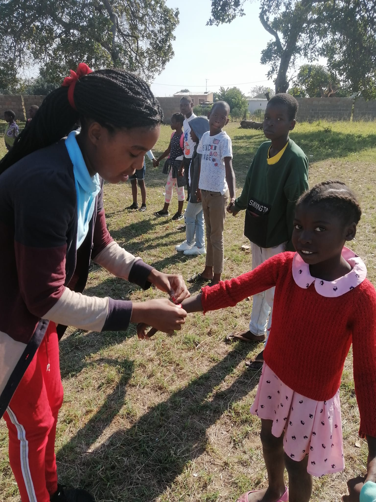

Apadrinhar é Salvar
Transforme vidas com um gesto de amor e esperança
Transforme vidas com um gesto de amor e esperança
O projecto “Apadrinhar é Salvar” , desenvolvido pela Associação Luz Verde, é uma iniciativa social que tem como principal missão transformar realidades e criar oportunidades para crianças em situação de vulnerabilidade social em Moçambique.
A proposta nasce do princípio de que toda criança tem direito a um desenvolvimento pleno — físico, emocional e educacional —, e que a solidariedade é um instrumento poderoso de mudança. Por meio do apadrinhamento solidário, pessoas e instituições se tornam padrinhos de crianças em risco, oferecendo contribuição regular que garante alimentação, acesso à escola, cuidados de saúde, vestuário e acompanhamento psicossocial.
O programa também promove atividades de lazer, reforço escolar, educação para a cidadania e apoio ao fortalecimento familiar, sempre com foco na inclusão, na dignidade e no amor ao próximo. Os recursos arrecadados são aplicados de forma transparente e responsável, com relatórios de acompanhamento e partilha regular de resultados com os padrinhos e parceiros.
Mais do que prover ajuda material, o “Apadrinhar é Salvar” constrói pontes de afeto e esperança, permitindo que cada criança tenha a oportunidade de sonhar, crescer e acreditar num futuro melhor. Através dessa iniciativa, a Associação Luz Verde reafirma o seu compromisso com a construção de uma sociedade mais justa, humana e solidária — onde apadrinhar é realmente salvar vidas.

Data de nascimento: 18/06/2016 — Idade: 09 anos
Gosta de portugues e sonha ser professora.

Data de nascimento: 03/01/2015 — Idade: 11 anos
É curiosa, adora ler e quer ser médica.

Data de nascimento: 15/09/2018 — Idade: 08 anos
Gostaria de estudar engenharia e ajudar a comunidade.

Data de nascimento: 25/09/2020 — Idade: 06 anos
Gosta de desenhar e de contar histórias.

Data de nascimento: 18/05/2014 — Idade: 12 anos
Sonha em ser Professora de matemática.

Data de nascimento: 30/01/2018 — Idade: 08 anos
Adora música e leitura.

Nasc.: 09/06/2015 — Idade: 11 anos
Gosta de matemática e tecnologia.

Nasc.: 05/11/2018 — Idade: 08 anos
Sonha ser professora.

Nasc.: 02/11/2016 — Idade: 10 anos
Gosta de artes manuais.

Nasc.: 01/10/2015 — Idade: 11 anos
Destaca-se nas atividades esportivas.

Nasc.: 24/05/2016 — Idade: 10 anos
Sonha ser bombeiro.

Nasc.: 14/12/2015 — Idade: 11 anos
Ama dançar e participar de corais.

Nasc.: 13/04/2014 — Idade: 12 anos
É brincalhona e adora esportes.

Nasc.: 21/09/2015 — Idade: 9 anos
Gosta de literatura e animais.

Nasc.: 30/08/2011 — Idade: 13 anos
Quer ser engenheiro civil.

Nasc.: 10/04/2016 — Idade: 8 anos
Adora ler e brincar ao ar livre.

Nasc.: 03/07/2013 — Idade: 11 anos
Gosta de futebol e matemática.

Nasc.: 12/11/2012 — Idade: 12 anos
Deseja ser pediatra.

Nasc.: 25/03/2015 — Idade: 9 anos
Gosta de desenhar heróis.

Nasc.: 06/06/2014 — Idade: 10 anos
É sorridente e muito estudiosa.

Nasc.: 19/09/2013 — Idade: 11 anos
Sonha ser técnico de informática.

Nasc.: 15/12/2012 — Idade: 12 anos
Quer ser professora de ciências.

Nasc.: 04/01/2015 — Idade: 9 anos
Adora futebol e leitura.

Nasc.: 09/08/2016 — Idade: 8 anos
Gosta de cantar e dançar.

Nasc.: 01/05/2014 — Idade: 10 anos
Quer ser piloto de avião.
Palavras de quem faz parte da transformação.

“Apadrinhar uma criança mudou minha forma de ver o mundo. É gratificante saber que posso contribuir para o futuro de alguém.”

“Graças à Associação Luz Verde, meu filho agora frequenta a escola e acredita no próprio potencial.”

“Ser voluntária me ensinou o verdadeiro significado de solidariedade e amor ao próximo.”
Conheça algumas das iniciativas que já impactaram a vida de centenas de crianças, tais como distribuição de material escolar, construção de residência e assistência às crianças especiais

A Distribuição de Material Escolar é uma ação que garante a centenas de crianças o direito de começar o ano letivo com dignidade e igualdade de oportunidades. Através das doações e do apadrinhamento solidário, são entregues mochilas, cadernos, lápis e outros materiais essenciais, permitindo que cada aluno tenha acesso às ferramentas necessárias para aprender e desenvolver seu potencial.
Mais do que oferecer objetos, esta iniciativa representa o compromisso da Associação Luz Verde com a educação, o futuro e a esperança de cada criança. Cada gesto de doação é uma semente plantada em terreno fértil — o coração e o sonho de uma nova geração.

A Construção de uma Residência para 6 Crianças Órfãs é um projeto de amor e solidariedade que tem como objetivo oferecer um lar seguro, acolhedor e cheio de esperança para crianças que perderam seus pais e vivem em situação de vulnerabilidade, na província de Maputo, distrito de Moamba.
O espaço está a ser concebido para garantir conforto, alimentação adequada, acesso à educação, acompanhamento emocional e, acima de tudo, um ambiente onde cada criança possa sentir-se amada, protegida e valorizada.
Com o apoio de voluntários, parceiros e doadores, a Associação Luz Verde transforma sonhos em lares — porque todo ser humano merece viver sob um teto que ofereça dignidade, amor e oportunidade de recomeçar.

No âmbito do programa Assistência a Crianças com Necessidades Especiais, a Associação Luz Verde realizou uma ação profundamente humana e inspiradora ao beneficiar o menino Ismael, residente no Bairro Matola Gare.
Ismael é uma criança extraordinária que, apesar de enfrentar uma deficiência nas duas mãos, não desistiu dos estudos e demonstra uma força admirável ao escrever com os pés enquanto frequenta a escola. Reconhecendo sua determinação e vontade de vencer, a associação ofereceu-lhe uma cama completa e material escolar, garantindo mais conforto e condições adequadas para o seu crescimento e aprendizado.
Esta iniciativa reflete o propósito essencial da Associação Luz Verde: promover inclusão, dignidade e esperança, mostrando que nenhuma limitação é maior do que a coragem de quem sonha. O exemplo de Ismael motiva toda a comunidade a acreditar no poder da solidariedade e na importância de apoiar cada criança para que alcance seu pleno potencial.
Endereço: Bairro Incassane, Katembe – Maputo, Moçambique
Telefone: (+258) 84 660 5892
Email: luzverde10@gmail.com
Atendimento: Segunda a sexta, das 9h às 17h